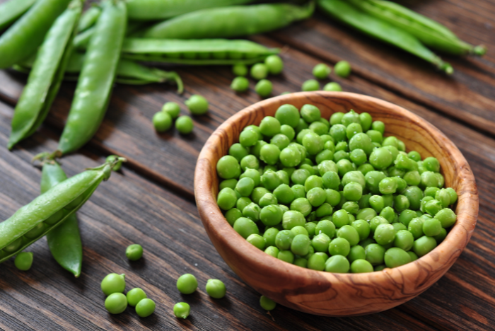

Top 10 foods containing B1

Nuts:
Nuts fall in the category of nutrient dense foods and contain vitamin B1 as well. Macadamia nuts are the best source of vitamin B1 with 100 grams serving providing 0.71 mg or 47% of the Daily value (DV) of this vitamin. Other nuts that are good sources of vitamin B1 include pistachios (13% DV), Brazil nuts (12% DV), pecans (9% DV) and cashews (7% DV). So it is time to give up unhealthy processed snacks and start munching nuts for a nutrition boost.
Fish:
Fish are known for its high concentration of omega-3 fatty acids. Most of the fish are good sources of vitamin B1 as well. Yellow fin tuna contains the highest levels of vitamin B1, contributing more that 35% of the daily requirement. Apart from this, trout fish provides 0.43 mg or 28% DV of vitamin B1 in a 100 grams serving. Other varieties include salmon (19% DV), shad (10% DV) and mackerel (9% DV). Hence, if you are a fan of seafood, you can consider having any of these fish on your meal plate to get the requisite amount of vitamin B1.
Lean Pork:
Lean pork is another non-vegetarian source of vitamin B1. It provides 1.12 mg or 74% DV of vitamin B1 in a 100 grams serving. Other cuts of pork that contain significant amounts of vitamin B1 include lean pork loin (58% DV), lean pork tenderloin (57% DV) and lean pork chops (51% DV).

Green Peas:
Even if you are a vegetarian, you need not worry about your vitamin B1 intake because there are certain vegetables that are good sources of this vitamin. Green peas are one such example, which provides 0.28 mg or 19% DV of vitamin B1 in a 100 grams serving. Fresh green peas are an excellent source contributing 28% DV in a cup serving while an equal amount of frozen sweet corn contributes 19% DV of vitamin B1.
Squash (Acorn):
Squash is available in several varieties and some of them are good sources of vitamin B1. For instance, acorn squash is the best source providing 0.17 mg or 11% DV of vitamin B1 in a 100 grams serving. Other varieties include cooked butternut and Hubbard Squash each contributing 10% DV of vitamin B1 in a cup serving.
Beans:
All varieties of beans, including navy beans, black beans and pinto beans contain high levels of vitamin B1 as well as heart healthy proteins. The navy beans are the best sources providing 0.24 mg or 16% DV of vitamin B1 in a 100 grams serving. Other beans that are good sources of vitamin B1 include pink beans (29% DV), black beans (28% DV) and mung beans (22%).
Edamame:
Apart from being rich in protein, dry roasted soybeans or edamame are a great source of vitamin B1, providing 0.43 mg or 28% DV of this vitamin in a 100 grams serving. However, it should be consumed in moderation as it is also high in calories. An ounce serving of edamame contains 126 calories.
Seeds:
Various seeds are also good sources of vitamin B1. Sunflower seeds have the highest concentration of vitamin B1 providing 1.48 mg or 99% DV in a 100 grams serving. Sesame seeds come second with 100 grams serving providing 1.21 mg or 80% DV of vitamin B1. Other seeds that contain significant amounts of vitamin B1 include chia seeds (16% DV) and pumpkin and squash seeds (5% DV each).
Cooked Asparagus:
Among the green vegetables, cooked asparagus is a good source of vitamin B1. 100 grams serving of cooked asparagus provides 0.16 mg or 11% DV of this vitamin. Canned uncooked asparagus provides 5% DV in a half cup serving while an equal amount of cooked frozen asparagus contributes 4% DV of vitamin B1.